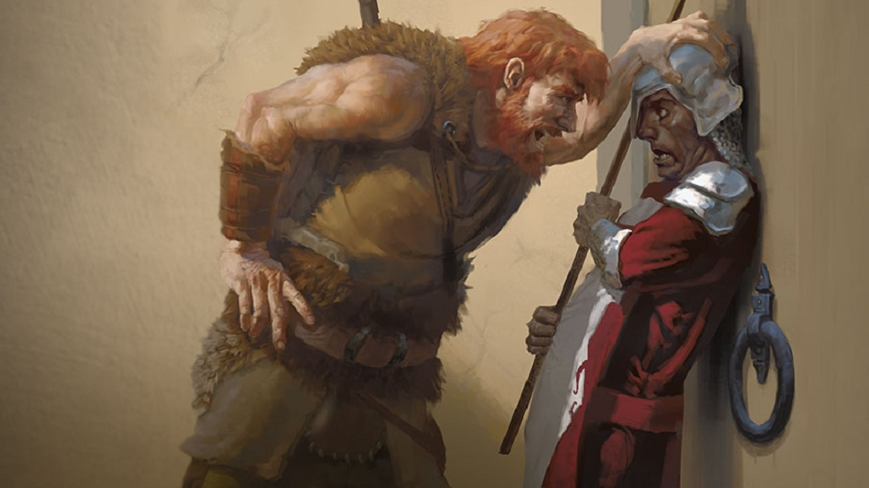

The characters are arguably the most important element in any D&D game. There are lots of different aspects that need to be taken into consideration when designing and playing a charater. There's race, class, alignment, and background. These all have an effect on your character's stats and on how the character can be played in game.

Race provides the core of your character's abilities and special traits. Elves are perceptive and dexterous, Dwarves resilient and Dragonborn's strong. There are dozens of races to chose from and even more can be created in homebrew games, but the core races are Dwarves, Elves, Halflings, Humans, Dragonborns, Gnomes, Half-elves, Half-orcs and Teiflings. Although different races give certain advantages to a chararacter, they also bring their own disadvantages. Teiflings and Half-orcs are generally hated in the D&D universe, so negotiating as one can be tricky while Dwarves are strong but slow and Gnomes are smart but small. Although it is easy to let races fall into stereotypes, it can be interesting to play against them. It can spice up a game to have a half-orc bard or a gnomish barbarian!
Class is considered to be the root of your charatcer. What do they stand for? What are their aims in life? The class of your charater will define what they can and cannot do, adding further traits and features to those inherited from race. The core classes are barbarian. bard, cleric, druid, fighter, monk, paladin, ranger, rogue, sorcerer, warlock and wizard. One of the biggest aspects to consider when chosing a class is magic. Magic tends to split the classes into spell casters and traditional fighters so if you favour one above the other it's imortant to consider which class is more suited to your style.
Alignment defines the moral compass of your character. There are 9 options, presented in a grid form. There's lawful, neutral, and chaotic, which regard how your character views law and society and good, neutral, evil, which indicate if the charatersways towards to good or evil forces in the world of D&D. This can be important as it not only guides you in how your charater would respond to various situations, but it also impacts how other NPCs (Non-playable characters) react to you. For example, Gods in the D&D universe are also aligned, which would impact whether they assist or attack you.
The background is by far the most creative part of character creation. There are set backgrounds for you to choose from, gladiator, heretic, knight and noble to name a few. These also give you a couple of extra features and traits, but they also serve to shape your charater. They give you a back story, a reason to do what you do. Were you raised on the streets, brought into a life of crime? Or in a monastery, praising your god? Did you have a grizzly past in the army, seeing your friends chopped down, or sailing the seven seas with a rag-tag pirate crew? This can be laid out in your background.